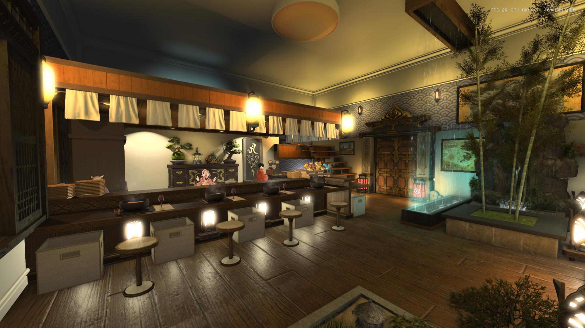
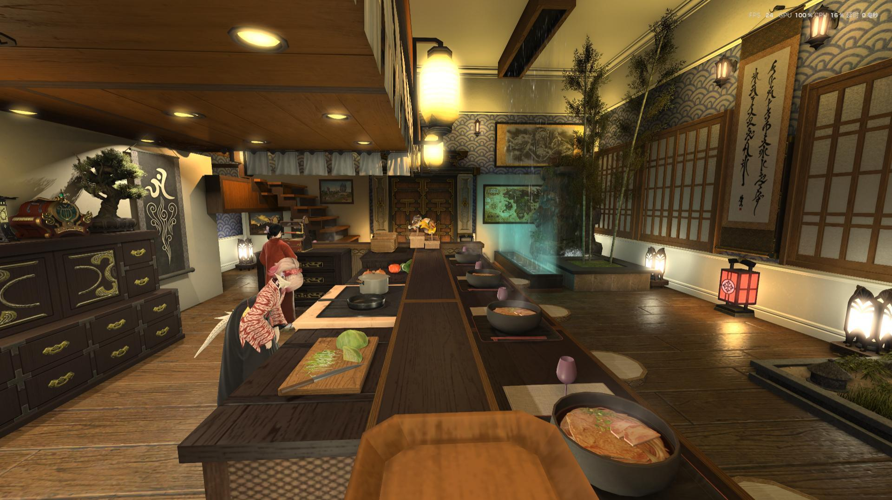
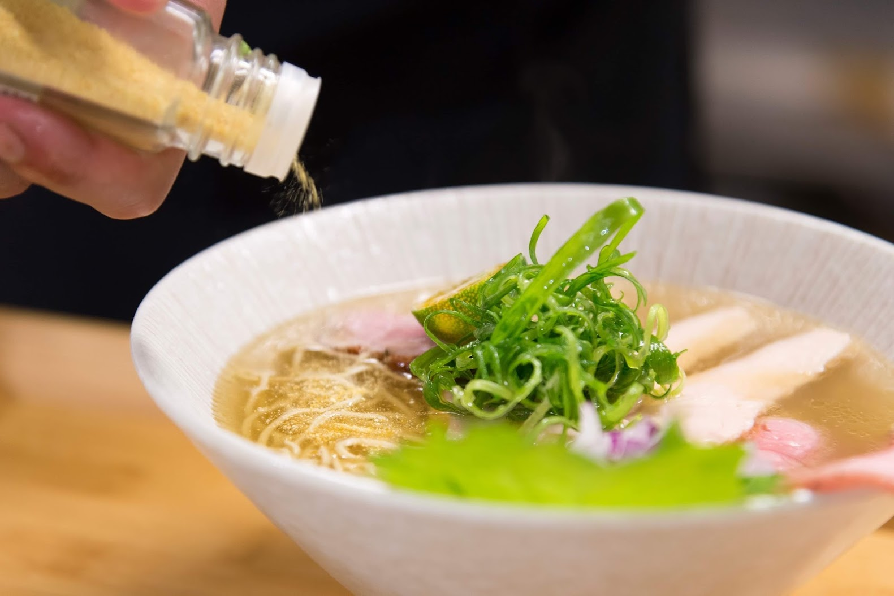
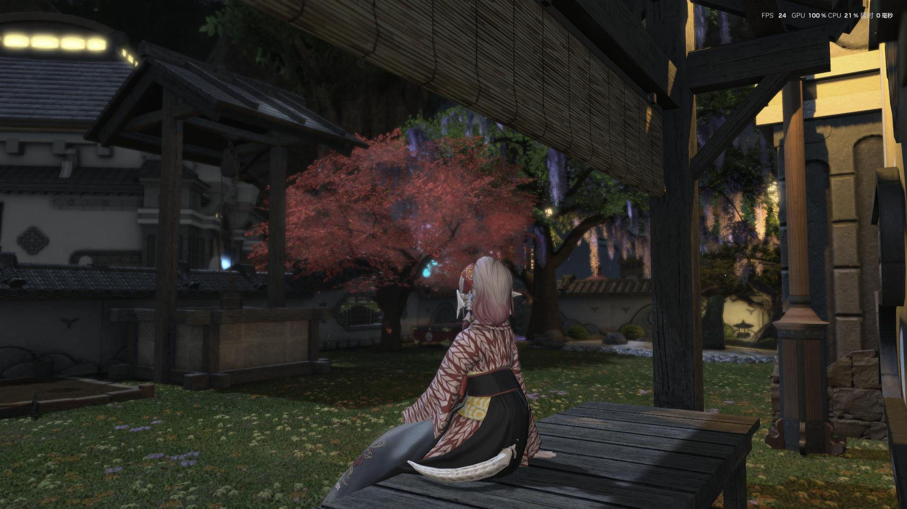

數寄屋 辻葉オリエンタル・うどん專門店
伊弗利特 薰衣草苗圃18區38號 ｜ 用餐與RP須知

歡迎光臨
歡迎來到數寄屋 辻葉オリエンタル・うどん專門店。為了讓每位客人都能在這個空間享受熱騰騰的巴掌與被老闆惡劣態度騷擾的時光，請在入座前詳閱以下規則。願水晶的光芒引導您熱呼呼的臉頰。
店內規範與用餐須知
- 用餐料金： 非包場或非滿場時段用餐料金為10,000GIL 可與老闆暢聊五分鐘 本店以沒禮貌為特色，會一直被打巴掌，請接受後再付款 若有被冒犯之感覺需終止服務可隨時告知。
- 飲料兌換： 支付料金時 店主會交付<海神湯>道具 請將交易畫面截圖保存 並可前往現實世界中的數寄屋 辻葉 於結帳時出示截圖可選擇一瓶免費飲料(可樂/雪碧/可爾必思) 現實拉麵店低消為一人一碗麵。
- 現實地址： 數寄屋 辻葉 ゆず塩鷄白湯らーめん專門店 地址為:台北市大安區泰順街33-5號
- 拍照與社群分享： 歡迎使用 Gpose 拍照留念！若要上傳至社群平台，歡迎標註我們
#數寄屋辻葉。 - 尊重彼此： 本店為休閒向超輕RP，基本與現實連結，請保持禮貌，切勿做出強迫他人互動或破壞氣氛的行為，重RP廚請左轉，問問題時也請經過腦子，性別騷擾更是打咩。
- 自由支付： 若不想用餐付費聊天也可到處坐坐參觀 請不要有壓力 隨喜即可 門外的雇員為小費箱 可隨喜樂捐
- 包場及混雜時段： 因老闆只有一個，有時會有店裡塞滿客人的情況。若店內為混雜時段，將開放所有客人與老闆互動，費用部分隨喜樂捐(交易時一樣會提供海神湯 請記得截圖)。
- 抖內： 若想給料金以外的抖內，請不用給太多錢，我對錢過敏，以50萬為限 若真想抖內 可至門口小費箱投餵 如此更可留下紀錄 讓老闆有時間一對一好好感謝你的抖內。
- 現實的拉麵店有賣什麼拉麵：目前僅販售濃湯及清湯兩種，有時會有限定，請關注Threads以外的社群媒體如IG/FB(Threads是我的廢文帳)。
- 現實也是抖M拉麵店嗎：現實是有禮貌拉麵店，不會打你巴掌，請放心。
- 老闆人呢：老闆常常休假，不一定會遇到我，我是個綁馬尾的臭臉男，但心地善良，你請我吃東西我會超開心。
- 飲料兌換：飲料就是只能換可樂/雪碧/可爾必思 其一。沒有加料/不能換梅酒蘇打。 內用為低消一碗麵，不能只進來換飲料，還是得請客人遵守現實拉麵店的規定。


常見小問題

營業資訊
伺服器位置： 火神 伊弗利特
詳細地址： 薰衣草苗圃(森都)18區38號
營業時間： 睡醒有精神的時候
